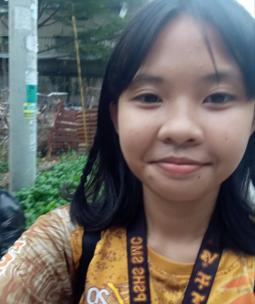

Hi everyone! I'm Yannah SImone D. Rodrigo, a passionate advocate for climate action. I'm commited to making a positive impact and I'm here to help educate people about what's happening to our world and what we can do to prevent global warming/climate change.
I am very passionate about climate action and sustainability. I want to inspire others to join me in making a positive impact on the environment. Let's work together for a greener future.
We started small as a simple group of friends discussong some things that matter to us. Climate change, sustainability, and the future of our planet has always been top of mind. As we expressed our worries and ideas, it quickly became obvious that we were not alone. There were others who, like us, felt the same and together we could act.
We have grown since then, but the mission is still the same - we are about awareness, and action. We believe one tiny step matters, so all of us working together can make a much bigger impact. We are not experts, we are just a group of people who care, and want to do our bit to help the fight against climate change.
More info:
Here are the links related to climate change:
NASA,
CLIMATE KIDS,
NASA
I can be located in Philippine Science High School-Southern Mindanao Campus. You can also contacct me in these social media platforms below:
Facebook,
Instagram